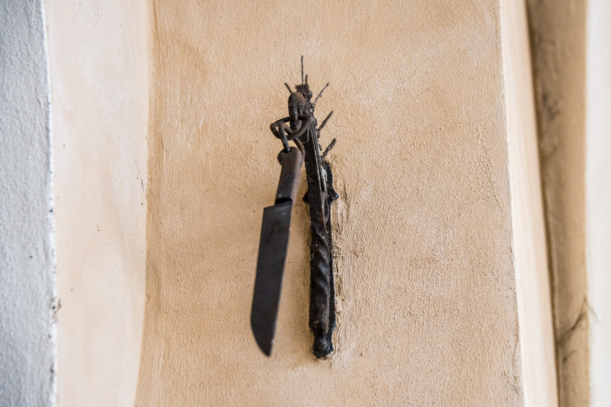
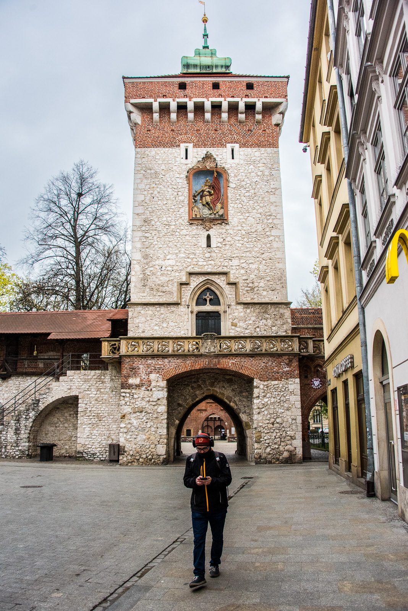
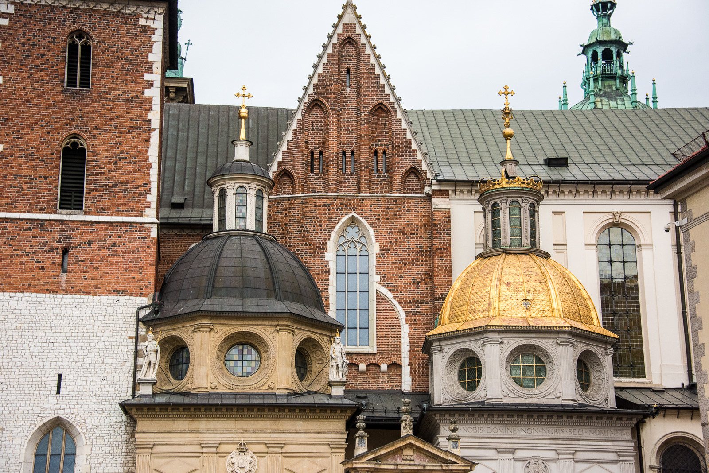

A Capital That Forgot
It Was No Longer Capital
Iza opens with the thing Kraków visitors most need to understand: the city's historical importance, its sudden eclipse, and — critically — why it survived intact when Warsaw did not.
Poland coalesced from several Slavic communities in the 10th century. The first capital was Gniezno, in the north. But by the early 11th century, rulers recognised Kraków as better developed and more strategically placed. From 1320, when the first coronation took place here, Kraków was the undisputed capital of Poland — and remained so until the end of the 16th century, when the king moved to Warsaw.
When the court moved to Warsaw, no one bothered to officially change the capital. So each subsequent Polish king still had to come to Kraków at least once — to be crowned here, and ultimately to be buried in the cathedral on Wawel Hill.
The effect on Kraków was swift. Nobles followed the king north. Rich families followed the nobles. Within a generation, one of the most important cities in Central Europe became a forgotten provincial town. It would not truly revive until the second half of the 19th century.
Kraków's decline deepened through the 17th century. The Swedish invasion of the 1650s caused severe damage, and with no wealthy patrons left to fund restoration, the city simply stayed ruined. In 1795, Poland ceased to exist entirely — partitioned between Russia, Prussia and Austria. Kraków fell to Austria, remaining under Habsburg rule for 123 years.
While Russian and Prussian-held Polish territories faced active suppression of Polish identity, Austrian Galicia was comparatively tolerant. Kraków became a refuge for artists, intellectuals and noble families who wanted to express themselves as Poles. A quieter second golden age began.
The city's physical survival through the Second World War requires its own explanation. Warsaw — the capital — had 84% of it deliberately destroyed, building by building, after the 1944 Warsaw Uprising. Kraków was never the military target. And when the Nazis arrived, they made an unusual decision.
"The Nazis decided that Kraków was so beautiful, and so much to their taste, it couldn't possibly be a Polish city. According to their logic, Kraków was pre-German."
— Iza
Germans had indeed settled in Kraków during the Middle Ages, as they did across Central Europe — merchants invited to help develop cities. The Nazis twisted this historical fact into a claim of ownership. The result: rather than destroying the city, they spent money on it. The statues of Polish heroes were removed. The Jews were murdered. But the buildings survived.
The Barbican &
St Florian's Gate
The Barbican is one of the best-preserved medieval barbicans in Europe — a circular forward fort positioned outside the main city wall, connected to St Florian's Gate by a covered bridge over a moat. Its defensive logic was simple: if an enemy breached the outer gate, they found themselves trapped in a circular kill-zone, forced to change direction while defenders above rained down boiling oil, stones, arrows and firearms.

The additional trick built into St Florian's Gate: the entrance passage contains a deliberate dog-leg, forcing any attacker to stop and change direction inside a confined space — exposed, slowed, visible from above.
In the 18th century, the Russians approached the city. A single defender remained inside the Barbican — with no ammunition. He loaded one of the buttons from his coat into his gun and fired. The button nearly killed the Russian commander on the other side.
There is a commemorative plaque on the far wall of the Barbican. Since it was built, no enemy ever entered the city through this gate. The other seven gates were not so fortunate.
The Barbican defended only the northern approach — historically the most vulnerable, with no natural river barrier. Kraków had eight gates and over forty towers in its full medieval circuit. Only the Barbican and St Florian's Gate survive.
Why the City Walls
Almost Disappeared
By the early 19th century, medieval city walls across Europe had become liabilities. No military function, expensive to maintain, and associated with urban problems: thieves, beggars, wooden slum structures built against the walls, a moat full of rubbish.
A single city council member argued for preserving at least the St Florian's Gate fragment. His first argument — that it should be kept as a symbol of national identity for a people who had just lost their country — convinced nobody.
So he tried a second argument: the wall was needed to protect the city from cold northern winds. Without it, those winds would blow up the long skirts of the ladies on Floriańska Street — the most elegant street in the city — posing a danger to public morality. This argument worked. The wall survived.
"Kraków 200 years ago was a small provincial town. Traditions mattered to people." — Iza
Where the rest of the walls and moat once stood, the Planty was created — a ring of parkland encircling the entire Old Town, still intact today.
The Lady with
a Weasel
The yellow building on Floriańska houses part of Poland's first public museum, established when the Czartoryski family donated their collection to the city in the 1870s. They chose Kraków because, under Austrian rule, it was the only part of Poland where such a national institution could legally exist.
The collection was begun by Princess Izabela Czartoryska — a sentimentalist more interested in historical objects than fine art. She acquired, among other things, a chair from Shakespeare's house and the undergarment of the last King of Poland.
Her son, buying in Italy on her behalf and repeatedly told she wanted no paintings, sent home a box anyway. Inside was a Leonardo da Vinci. The mother was not thrilled — she didn't want faces, didn't understand paintings. For a long time the work was known in Poland as Lady with a Weasel, the animal's identity being unclear. It is now the museum's — and arguably Poland's — greatest treasure.
The Main Square &
Medieval Justice
When the Mongols destroyed Kraków in 1241, the city was rebuilt from scratch on a German urban model — re-chartered under German law, as was common across Central Europe. The very word Iza uses — Rynek — comes from the German Ring. Medieval market squares weren't fully paved; a single circular path ran around the perimeter, the rest covered with stalls and mud.
Medieval justice was administered here, in the open square, around the town hall building — now demolished, its leaning tower the only remnant. Prison was not used to punish common criminals until the 18th century; nobody wanted to pay to maintain them. Punishment was immediate, public and designed to mark the offender permanently.
The principle: mark the criminal so that everyone in the city would always know who he was — but leave him functional enough to survive and work. Thieves had their ears cut off. Occasionally a piece of the nose. Without an ear, a man was marked for life. But he still had both hands. He could survive.
A knife hung in the centre of the square as a public reminder of these consequences. A replica is still displayed, though originals are routinely stolen by souvenir hunters. A more authentic version can be bought inside the Cloth Hall.
The Cloth Hall &
Eight Centuries of Commerce
The Cloth Hall was very nearly demolished in the 19th century. It was deteriorating, nobody could quite see what it might become, and city authorities were looking for a home for the National Gallery. Restoring the Sukiennice seemed too expensive — until someone decided it was in good enough taste to try. The gallery moved upstairs. The ground floor has been occupied by market stalls — selling cloth, then amber, then crafts and souvenirs — in an almost unbroken line since the 13th century. Almost 800 years, and it never ceased to be a marketplace.
The Hejnał &
The Myth of the Trumpeter
Every hour, on the hour, a trumpeter appears in the higher tower of St Mary's and plays the Hejnał mariacki — a short melody that cuts off abruptly, mid-phrase, before the final note. The famous explanation: in 1241, a watchman spotted the Mongol advance and began sounding the alarm. A Mongol arrow struck him in the throat mid-note. All subsequent trumpeters, in his honour, stop at precisely the same point.
"The story was actually made up about a hundred years ago by a writer from here. He told it to a visitor from the United States, who went home and wrote an international bestseller for children — The Trumpeter of Kraków. Now you can never change the story."
— Iza
Iza's own theory: the trumpeters originally played to signal the opening and closing of the city gates, and may have left the pause to listen for an answering signal from the city walls. When the walls became redundant, the pause simply remained.
The Hejnał has been played every hour, day and night, since the Middle Ages. The trumpeters are firefighters by profession. They need to pass a musical test. Not all of them play equally well.
St Mary's itself is the main parish church of Kraków — older than the cathedral on Wawel. The centrepiece is the altarpiece by Veit Stoss: the largest Gothic wooden altarpiece in Europe at 13 metres high, carved in the late 15th century with figures modelled on real people living in Kraków at the time.
The Obwarzanek
The ring-shaped bread sold from the blue carts around the square — the obwarzanek krakowski — has been a symbol of the city since the Middle Ages. The carts are blue because blue is the official colour of Kraków. The obwarzanek is boiled in water and sugar before baking, then finished with poppy seeds, sesame, salt, or left plain. Related to but distinct from a bagel: smaller hole, harder texture, less soft.
"The first time you taste it, it doesn't seem very impressive. It's bread. A little bit hard. But if you live here, you eat them constantly. It's a thing to try." — Iza
The Jagiellonian University &
The Professors' Arrest
The Jagiellonian University was founded in 1364 by King Casimir the Great — the second university in Central Europe, after Prague. It was re-established by Queen Jadwiga, who married the Lithuanian prince Władysław Jagiełło and endowed the university with her personal fortune, including her jewellery. Her husband funded the building complex around the Collegium Maius courtyard that stands today. Copernicus studied here before going on to prove that the Earth orbits the sun.
The Germans entered Kraków on 6 September 1939 without resistance. In November 1939, the university professors made the fateful decision to reopen. When the Nazis found out, they invited all professors to a conference at the Collegium Novum across the street. 183 men arrived. They should have noticed the trucks surrounding the building. The conference lasted seven minutes.
All 183 were arrested and sent to concentration camps — initially Sachsenhausen, near Berlin. Most were eventually released following protests from German academics. The Jewish professors among them were not.
With schools officially closed, Poles organised a clandestine education system. In Kraków alone, almost 500 people studied secretly at the university during the occupation. Twelve doctoral degrees were awarded. Being caught meant the concentration camps — or death.
The Collegium Maius building became, under Nazi occupation, the headquarters of the Institut für Deutsche Ostarbeit — its purpose to falsify Polish and Kraków history, proving that anything of cultural value was German in origin. It published guidebooks promoting German tourism to the occupied city. Auschwitz was recommended as a pleasant day trip from Kraków.
The Royal Palace &
What Survives
The palace you see today is largely a 16th-century Italian Renaissance creation. The king invited architects from Florence to modernise the old Gothic structure — which meant working with irregular foundations and no straight walls anywhere in the courtyard. The solution was to vary the spacing between columns slightly on each arcade, disguising the irregularity through rhythm rather than symmetry.
The palace was finished just as the king who commissioned it died. The king who finally and definitively moved to Warsaw had a dangerous hobby: alchemy. During one experiment he started a fire, left for repairs to be made — and simply never came back. Warsaw was also the pragmatic choice. The Polish-Lithuanian Commonwealth was enormous — spanning what is now Poland, Lithuania, Latvia, Ukraine and Belarus. Kraków sat at its southwestern edge. Warsaw was roughly central.
The subsequent centuries were not kind to the palace. Swedish invasions stripped it bare — the Swedes took everything, including tiles from the floors. Russian and Austrian occupations converted it into a military barracks. Restoration was funded by donations from Polish emigrant communities worldwide. The work was finally completed in the late 1930s, just before the German governor Hans Frank moved in and converted one of the royal rooms into a swimming pool.
The Cathedral:
"The Most Important Church in Poland"
While the Royal Palace suffered centuries of stripping and neglect, the cathedral on the same hill was treated with far greater care — because it was sacred, because the Church had resources, and because successive monarchs continued to be crowned and buried here long after the court moved to Warsaw.

"The best-preserved part of Wawel, without any doubt, is the cathedral. Do you know why? It's a church — so people had respect for it. They came back and restored it again and again. The palace is a ruin compared to it."
— Iza
The current building is largely 14th century, but its exterior is an extraordinary palimpsest — every generation added to it in whatever style was dominant, without a unifying plan. The result is architectural chaos that somehow coheres: Romanesque foundations, Gothic towers, Renaissance chapels, Baroque additions, all colliding on the same hilltop.
Sigismund I's chapel has the golden dome — the entire dome was gilded from a single gold coin melted down, according to tradition. Inside, it is pure Italian Renaissance: the king on his sarcophagus appears not dead but sleeping, the decoration confident and luminous, full of humanist optimism.
Sigismund III's chapel is Baroque: darker, dense with memento mori imagery, the awareness of death insistent throughout. Both are impressive. They couldn't be more different in philosophy.
One king broke the coronation tradition entirely: Stanisław August Poniatowski, the last King of Poland, crowned himself in Warsaw rather than making the journey to Kraków. He was the only one ever to do so.
"It's very symbolic that the first time the tradition was broken, absolutely the worst possible thing for the country happened." — Iza
Within years of his self-coronation in Warsaw, the country was so weakened that he was forced to abdicate. Poland ceased to exist for 123 years.